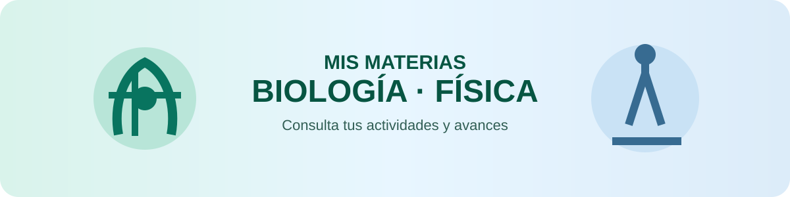

ESCUELA SECUNDARIA GENERAL SANTA ANA BATHÁ
Bienvenido al
Portal Escolar
Escuela Secundaria General Santa Ana Bathá
Un espacio digital para aprender, organizarnos y fortalecer
nuestra comunidad educativa.
DOCENTE
Consulta de actividades
Selecciona a tu docente para comenzar.
🔒 Acceso protegidoConsulta personal con PIN
📈 SeguimientoAvance actualizado
📱 Desde cualquier dispositivoPortal instalable